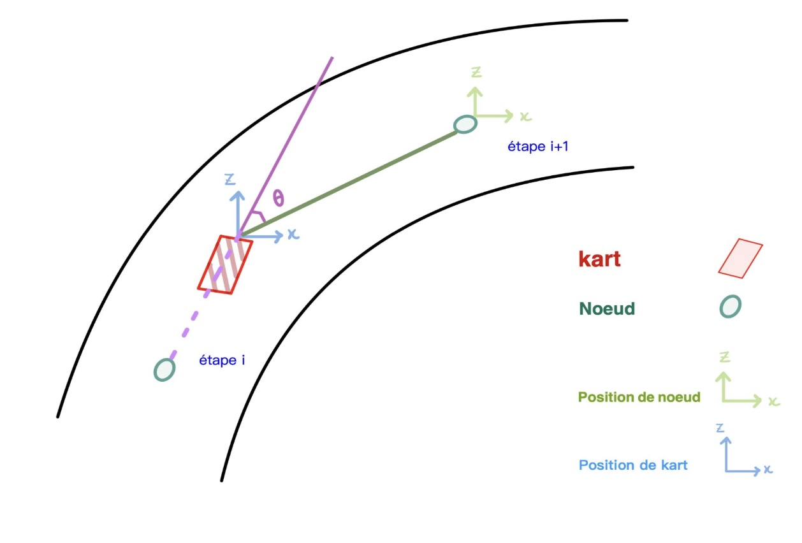
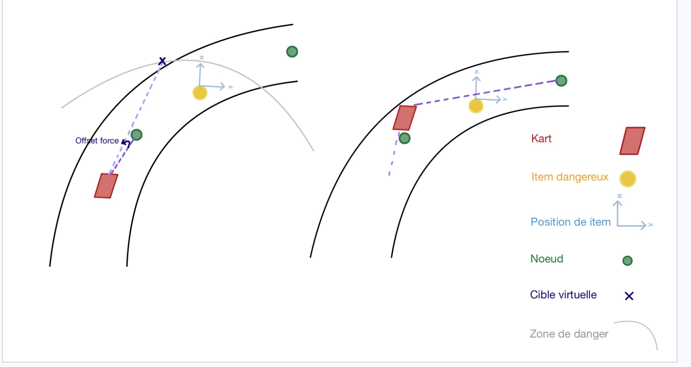

La direction que prend le kart dépend des nœuds sur la piste. Dans notre première version, le kart regardait uniquement le nœud le plus proche, cependant nous avons remarqué un énorme problème de stabilité de la part de notre kart. Ensuite nous avons décidé que notre kart regarde le numéro path_lookahead qui est par défaut à 3. De ce fait, notre kart se dirigeait vers le troisième nœud sur la piste pour se diriger. Maintenant, notre kart ne regardera pas le n-ième nœud par rapport à la position de notre kart mais le nœud que le kart doit regarder dépend de la vitesse de celui-ci. Nous utilisons pour ceci la formule mathématiques : (velocity/10) + 1.0. Nous ajoutons + 1.0 afin qu’au départ ou lorsque notre kart n’avance que très peu nous regardons le nœud le plus proche. Maintenant, vu que nous utilisons “velocity”, si notre kart est rapide, il regardera loin donc un nœud plus loin sur la piste afin de gagner en vitesse et en stabilité et si le kart est lent, il regardera un nœud proche de lui afin de gagner en précision dans les virages serrés. Nous ne regardons plus le nœud défini par paths_end mais nous faisons la somme du n-ième nœud de paths_start et de paths_end que nous divisons par deux afin d’obtenir le milieu du segment ((obs["paths_start"][idx][0] + obs["paths_end"][idx][0]) / 2.0). Cette technique nous permet de gagner légèrement en stabilité et de mieux anticiper les virages imminents.

À chaque frame, le kart regarde la position de la banane ou du bubblegum le plus proche. On récupère ensuite les coordonnées x et z. Si l’item dangereux est à 20 mètres de notre kart alors le danger est imminent et doit être pris en compte. Si la position de la banane ou du bubblegum est à gauche de notre kart et que le kart est au milieu alors l’agent va à droite. Sinon il va à gauche. Et si la position de la peau de banane ou du bubblegum n’est pas au milieu de la route alors notre kart ne le prend pas en compte et continue à suivre le milieu de la route.

À partir de ce moment-là, nous calculons l’arc tangente vu que nous avons x et z. Le résultat est ce que nous appelons l’erreur, si nous ne sommes pas dans la lignée du nœud que l’on regarde alors l’agent doit se remettre dans la lignée de celle-ci. Dans notre code nous avons utilisé atan2 de la librairie math : math.atan2(target_ctr_x, target_ctr_z). A noter que target_ctr_x peut être légèrement modifié par rapport à celui initial si on évite les items dangereux. Nous utilisons également la dérivée. La dérivée n’est pas à prendre au sens mathématiques du terme mais simplement comme la différence de l’erreur actuelle et de l’erreur précédente (celle du frame précédent) : dérivée = Erreur - Erreur Précédente. Nous avons défini un k pour la proportion et la dérivée avec un chiffre fixe mais nous améliorerons nos valeurs k ultérieurement dès que nous aurons mis en place l’optimisation Bayésienne. Nous avons également pensé à changer le k selon la vitesse du kart comme nous avons fait précédemment avec les nœuds selon la vitesse du kart. Enfin, pour éviter que notre agent ne donne un coup de volant trop brusque, nous limitons le changement de direction entre -1 et 1.
Nous regardons la direction du volant, si le volant est tourné, notre agent va accélérer de manière moins forte (accélération 0.5) alors que si le volant est au milieu alors notre kart est dans une ligne droite et elle va donc rouler à fond (accélération 1.0). Enfin, si la courbure de la route n’est plus droite alors notre kart freine pour ne pas aller trop vite et éviter de sortir de la route.
Le nitro n’est utilisé que lorsque le volant est droit afin d’éviter que l’on utilise celui-ci lorsque la route devient sinueuse afin d’éviter une sortie de piste. Précédemment, notre kart utilisait l’item qu’il récoltait dès qu’il était dans une ligne droite. Le problème est qu’il pouvait l’utiliser quand bien même il n’y avait aucun kart devant lui. Maintenant, l’agent utilise dès qu’il voit un kart adverse à moins de 25 mètres et sur sa route. Nous gagnons ainsi en précision et les items que nous utilisons touchent beaucoup plus souvent nos adversaires.
Si la vitesse est à l’arrêt au milieu de notre course, alors notre kart est bloqué dans un mur. Idéalement nous essayons d’être secouru mais nous avons remarqué que le secours par l’oiseau bleu n’est pas automatique. Ainsi, si notre kart n’est pas secouru alors notre kart fait manuellement marche arrière afin de reprendre sa route.